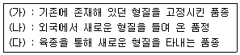

종자기능사 (2015-07-19 기출문제)
1과목: 종자(임의구분)
1. 다음 중 종자전염성 병원균 검정방법이 아닌 것은?
- 한천배지 검정
- 여과지배양 검정
- 생물학적 검정
- 순도 검정
(정답률: 80%)

2. 육성한 품종을 세대별로 유지하면서 증식, 보급하는 4단계의 설명으로 틀린 것은?
- 기본식물은 육종가에 의해 생산된 종자이다.
- 원원종은 보급종자의 생산을 위해 증식하는 종자이다.
- 원종은 원원종에서 생산된 종자이다.
- 보급종은 원종에서 생산되는 종이다.
(정답률: 76%)
3. 다음 중 옥수수종자의 저온피해에 가장 크게 영향을 미치는 요인은?
- 저온에 접한 기간
- 온도
- 종자의 수분함량
- 옥수수 포엽의 보호정도
(정답률: 59%)
4. 다음 중 벼 또는 보리에 종자전염하는 병균이 아닌 것은?
- 도열병균
- 모잘록병균
- 깨씨무늬병균
- 붉은곰팡이병균
(정답률: 58%)
5. 발아검사 결과를 표시하는 방법 중 틀린 것은?
- 불발아 종자
- 발아정지 종자
- 비정상발아 종자
- 정상발아 종자
(정답률: 72%)
6. 종자전염병 방제 방법으로 적당하지 않은 것은?
- 무병종자 파종
- 저항성 품종 선택
- 종자 소독
- 이병성 품종 선택
(정답률: 79%)
7. 화분관이 자라 주공을 통해 배낭속으로 들어가 극핵 및 난핵과 결합하는 과정을 가리키는 것은?
- 수분
- 화분관신장
- 단위생식
- 수정
(정답률: 88%)
8. 생리적으로는 성숙하였지만 형태적으로 미숙한 상태로 모주(母株)로부터 종자가 떨어져 차츰 분화한 다음 완전한 형태의 종자로 성숙하는 것은?
- 후숙(後熟)
- 2차 휴면
- 타발휴면
- 배(胚)
(정답률: 88%)
9. 종자 전염성 병의 수확 후 방제법이 아닌 것은?
- 소각 처리
- 감염 종자나 이물질의 분리
- 화학제에 의한 종자의 표면 소독
- 유기물에 항생제를 혼합하는 방법
(정답률: 66%)
10. 종자 소독의 장점으로 거리가 가장 먼 것은?
- 처리약제에 특별한 색소 첨가
- 종자오염균의 피해 방지
- 발아전.후의 해충 및 토양미생물에 의한 피해 경감
- 유묘에 대한 병균이나 해충의 피해로부터 침투보호작용
(정답률: 88%)
11. 종자보증을 위한 종자 검사항목으로 틀린 것은?
- 품종의 구별성
- 종자의 발아율
- 종자의 순도
- 종자의 건전도
(정답률: 56%)
12. 다음 중 품종검사를 위한 방법이 아닌 것은?
- 종자의 형태적 특성조사
- 진생육검사
- 유묘의 형태적조사
- 테트라졸리움 검사
(정답률: 74%)
13. 다음 중 일반적인 쌀알의 외형적 발달과정으로 옳은 것은?
- 두께 → 나비 → 길이
- 나비 → 길이 → 두께
- 나비 → 두께 → 길이
- 길이 → 나비 → 두께
(정답률: 80%)
14. 종자의 유전적 퇴화 원인이 아닌 것은?
- 자연교잡
- 돌연변이
- 이형유전자의 분리
- 기상적 요인
(정답률: 83%)
15. 다음 중 벼 종자가 저온(0℃ 이하)에서 발아하지 못하는 경우의 휴면현상을 무엇이라 하는가?
- 자발휴면
- 타발휴면
- 진정휴면
- 배휴면
(정답률: 84%)
16. 종자발아에 미치는 온도 중 가장 짧은 기간 내에 가장 높은 발아율을 보일 수 있는 온도를 무엇이라 하는가?
- 최고온도
- 최저온도
- 평균온도
- 최적온도
(정답률: 90%)
17. 발아시 배축이 신장하는데 필요한 양분을 배유에서 받는데 다음 중 이에 대한 근거로 적절하지 못한 것은?
- 옥수수 종자는 발아중 배유의 건물중이 현저히 감소하였다.
- 옥수수 발아중 배축의 건물중이 현저히 증가하였다.
- 발아중 배유중의 전질소와 불용성의 단백질이 감소하였다.
- 동부의 자엽의 건물중이 증가하였다.
(정답률: 57%)
18. 작물의 생산력이 저하되고 품질이 나빠지는 종자퇴화의 원인이 아닌 것은?
- 가수분해 효소의 불활성
- 효소의 분해와 불활성
- 저장 양분의 고갈
- 균의 침입
(정답률: 65%)
19. 동일 품종내에서 유전적 형질이 그 품종 고유의 특성을 갖지 아니한 개체를 무엇이라고 하는가?
- 이형주
- 이종종자주
- 이품종주
- 품종순도
(정답률: 74%)
20. 종자의 형태에서 외형에 나타나는 특수기관의 설명으로 틀린 것은?
- 종자가 배병 또는 태좌에 붙어 있는 곳을 제라 한다.
- 배주의 한 끝에 있고 종자에서는 발아공이라고 하는 것을 주공이라 한다.
- 도생배주에서 생긴 종자의 특성으로 종피와 다른 색을 띠며 가는 선이나 또는 흠을 이룬 것을 우류라 한다.
- 봉선의 가장 끝에 있는 점을 합점이라 한다.
(정답률: 72%)
2과목: 작물육종(임의구분)
21. 어떤 품종이 우수하기는 하지만 한 두가지 형질의 개선이 필요한 경우, 이 품종에 특수한 유전인자를 옮겨 주기에 알맞은 육종방법은?
- 계통육종법
- 집안육종법
- 여교잡육종법
- 순환선발법
(정답률: 76%)
22. 품종 교체의 요인과 가장 거리가 먼 것은?
- 농업인구의 정체
- 재배 방식의 변화
- 병해충 발생의 증가
- 농업용 간척지의 개발
(정답률: 77%)
23. 채종재배에 관한 설명 중 틀린 것은?
- 자가불화합성은 양파ㆍ옥수수ㆍ당근ㆍ고추 등의 F1 채종에 활용되고 있다.
- 타식성 작물은 격리 재배하는 것이 좋다.
- 타식성 작물의 방임수분 품종은 신발과 채종조작의 경우 어느 정도 잠종성을 유지할 수 있도록 해야 한다.
- 자식성 작물은 자연교잡에 의한 품종퇴화 위험이 적어 채종이 비교적 용이하다.
(정답률: 52%)
24. 영양번식을 하는 작물에서 주로 이용되는 조합능력 검정 방법은?
- 3계 교배 검정법
- 다교배 검정법
- Top 교배 검정법
- 단교배 검정법
(정답률: 44%)
25. 일반적인 자연 환경에서 수박의 인공교배에 가장 적당한 시간은?
- 오전 8시
- 오전 11시
- 오후 1시
- 오후 3시
(정답률: 74%)
26. 배낭의 형성에 대한 설명으로 틀린 것은?
- 배낭모세포는 성숙분열 후 4개의 세포가 되며, 이 중 3개는 퇴화한다.
- 배낭 속의 핵 수는 총 6개이다.
- 배낭 중앙에 2개의 극핵이 있다.
- 주공 근초에 1개의 난세포가 있다.
(정답률: 79%)
27. 단일저항성 품종의 확대 재배에 따른 위험성을 일컫는 용어는?
- 유전적 부동
- 유전적 취약성
- 유전적 침식
- 유전적 퇴화
(정답률: 59%)
28. 다음 중 육종년한 단축을 위한 가장 효과적인 육종방법은?
- 계통육종법
- 약배양육종법
- 여교잡육종법
- 1대잡종육종법
(정답률: 60%)
29. F1 종자를 생산하는 방법과 가장 관계가 적은 것은?
- 세포질웅성붙임을 이용한다.
- 자가불화합성을 이용한다.
- 인공교배를 한다.
- 콜히친을 처리한다.
(정답률: 72%)
30. 유전적 원인에 의한 붙임성이 아닌 것은?
- 웅성 붙임성
- 자성 붙임성
- 배우자 붙임성
- 순환적 붙임성
(정답률: 59%)
31. 벼와 밀의 녹색혁명에 가장 크게 기여한 재배적 특성은?
- 내충성
- 내냉성
- 내습성
- 내도복성
(정답률: 73%)
32. 자가불화합성을 이용하여 F1(일대자봉)을 채종하는 작물은?
- 밀
- 오이
- 배추
- 국화
(정답률: 65%)
33. 형질을 종자상태, 생육초기 또는 잡종 초기세대에 검정하는 조기검정을 통해 육종효율을 향상시킬 수 있는데 조기검정 또는 그 방법으로 보기 어려운 것은?
- 세대단축을 이용한 검정
- 화분립 및 종자 검정
- 유식물 검정
- 포장 생사력 검정
(정답률: 53%)
34. 체세포분열 전기에 일어나는 사항이 아닌 것은?
- 방추사가 나타난다.
- 각 염색체는 2개의 염색분체로 되어진다.
- 전기가 끝날 때가 되면 인과 핵이 사라진다.
- 염색사가 꼬여짐으로 해서 염색체의 형태가 뚜렷이 보인다.
(정답률: 61%)
35. 반수체 식물을 유도할 수 있는 방법은?
- 생장점 배양
- 화분 배양
- 돌연변이
- 방사선 조사
(정답률: 54%)
36. 연관군에 대한 설명으로 옳은 것은?
- 동일 염색체 위에 있는 유전자의 일군이며 생물에는 반수 염색체(n)와 같은 수의 연관군이 있다.
- 동일 염색체 위에 있는 유전자의 일군이며 생물에는 2n 염색체와 같은 수의 연관군이 있다.
- 상동 염색체 위에 있는 유전자의 일군이며 생물에는 반수 염색체(n)와 같은 수의 연관군이 있다.
- 상동 염색체 위에 있는 유전자의 일군이며 생물에는 2n 염색체와 같은 수의 연관군이 있다.
(정답률: 44%)
37. 어떤 개체를 자식하여 얻은 표현형의 분리비가 9:3:3:1이라면 그 개체는? (단, 대립유전자간에는 완전우성 관계가 성립된다.)
- 양성잡종
- 다성잡종
- 단성잡종
- 삼성잡종
(정답률: 59%)
38. 동질배수체의 특징과 가장 거리가 먼 것은?
- 세포와 기관이 거대화한다.
- 종자가 크다.
- 꽃이 크다.
- 종실 임성이 높다.
(정답률: 60%)
39. 집단육종법의 이점이 아닌 것은?
- 잡종집단의 취급 용이
- 분리세대에서 많은 개체 전개 용이
- 자연선택을 유리하게 이용
- 육종년한 단축
(정답률: 58%)
40. 다음 (가)~(다)에 해당하는 내용을 순서대로 바르게 나열한 것은?

- 재래품종 - 도입품종 - 육성품종
- 도입품종 - 육성품종 - 재래품종
- 육성품종 - 재래품종 - 도입품종
- 육성품종 - 도입품좀 - 재래품종
(정답률: 86%)
3과목: 작물(임의구분)
41. 주로 논에서 발생하는 잡초는?
- 알발동사니
- 강아지풀
- 바랭이
- 쇠비름
(정답률: 62%)
42. 봄철에 흙이 건조할 때 보리밟기를 해 주는 이유가 아닌 것은?
- 쓰러짐을 막아준다.
- 생육을 억제시켜 준다.
- 분얼을 촉진시켜 준다.
- 뿌리의 발달을 억제시켜 준다.
(정답률: 65%)
43. 다음 중 맥류와 관련된 설명으로 틀린 것은?
- 맥류의 꽃은 모두 안껍질과 겉껍질에 싸여 있다.
- 1개의 암술과 4개의 수술 및 2쌍의 비늘껍질로 되어 있다.
- 맥류는 씨를 뿌린 후 8~12일이 지나면 발아하며, 본잎이 2장 될 때까지를 '아생기'라 한다.
- 맥류의 파성은 춘파형, 추파형, 양절형으로 구분한다.
(정답률: 61%)
44. 수확한 작물을 예냉하는 목적으로 가장 적합한 것은?
- 병충해 방제
- 저장 및 수송 중 부패 방지
- 중량 증가
- 파종시 발아 촉진
(정답률: 85%)
45. 광합성 효율이 좋은 C4 식물에 해당하는 것은?
- 벼
- 보리
- 고구마
- 옥수수
(정답률: 63%)
46. 일반적으로 파종시기가 3월 하순 ~4월 상순까지 파종하는 콩과작물은?
- 콩
- 동부
- 완두
- 강낭콩
(정답률: 70%)
47. 야외에서 자란 식물보다 온실에서 자란 식물이 웃자라기 쉬운 것은 유리나 플라스틱 필름이 어떤 광선을 잘 투과시키지 못하기 때문인가?
- 녹색광
- 적색광
- 청색광
- 황색광
(정답률: 53%)
48. 봄에 싹이 터서 여름에 왕성하게 자라고, 늦여름에 씨가 맺히며 서리가 오면 죽는 한해살이 잡초는?
- 쑥
- 냉이
- 메꽃
- 명아주
(정답률: 72%)
49. 농업 노동 부담을 효과적으로 줄일 수 있는 방법으로 적절하지 않은 것은?
- 농작업의 기계화
- 농작업의 공동화
- 비료와 농약의 사용 억제
- 생산 및 저장 시설의 자동화
(정답률: 85%)
50. 다음 중 주로 잎을 관상하는 것은?
- 과꽃, 나팔꽃
- 백합, 히야신스
- 소철, 고무나무
- 장미, 동백
(정답률: 73%)
51. 공기 중의 농도가 보통 380pp 정도이며, 식물의 광합성 작용에 반드시 필요한 성분은?
- 질소
- 산소
- 헬륨
- 이산화탄소
(정답률: 83%)
52. 재배 역사가 가장 오래된 작물은?
- 채소
- 과수
- 화훼
- 곡류
(정답률: 87%)
53. 벼를 너무 늦게 수확하거나 건조 중 비에 젖으면 많이 발생하는 쌀의 종류는?
- 복절미
- 금간쌀
- 푸른 쌀
- 심택미
(정답률: 72%)
54. 벼의 기계 이양 모를 육묘할 때 모판흙의 pH가 5.6 이상이 되면 어떤 현상이 일어나기 쉬운가?
- 윗자리기 쉽다.
- 발아율이 떨어진다.
- 싹틈이 늦어진다.
- 모잘록병이 발생하기 쉽다.
(정답률: 66%)
55. 태풍이나 침수 후에 발생하기 쉬운 벼의 병은?
- 도열병
- 바이러스병
- 흰빛잎마름병
- 잎집무늬마름병
(정답률: 55%)
56. 다음 중 적산온도가 가장 높은 작물은?
- 메밀
- 아마
- 조
- 벼(만생종)
(정답률: 78%)
57. 수분수로 이용하기에 가장 부적합한 복숭아 품종은?
- 백미조생
- 백봉
- 유명
- 장호원황도
(정답률: 63%)
58. 벼의 수확적기는 품종에 따라 차이가 있으나 일반적으로 출수 후 며칠인가?
- 20~30일
- 30~35일
- 40~45일
- 50~60일
(정답률: 68%)
59. 다음 중 식용작물로 분류되지 않은 것은?
- 벼
- 보리
- 옥수수
- 참깨
(정답률: 87%)
60. 상록 과수에 속하는 것은?
- 비파
- 호두
- 매실
- 참다래
(정답률: 64%)